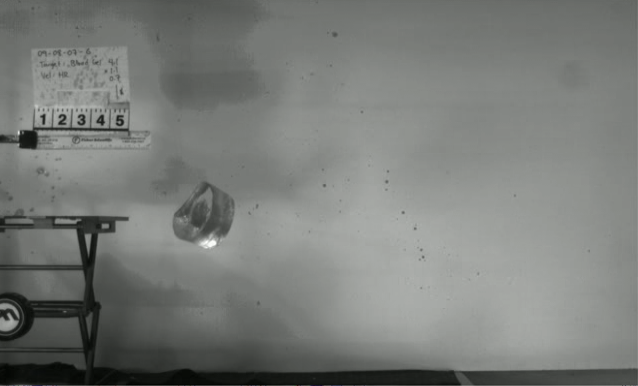
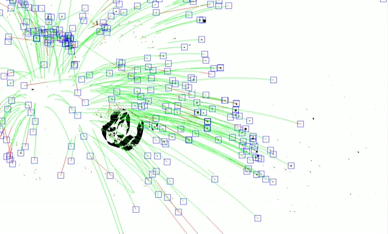
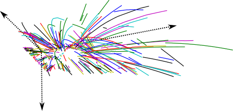
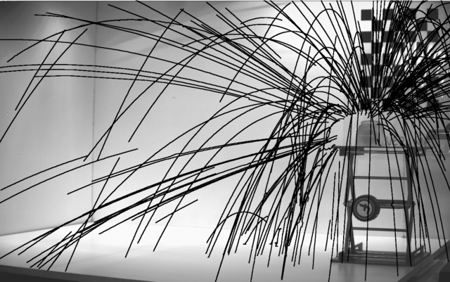
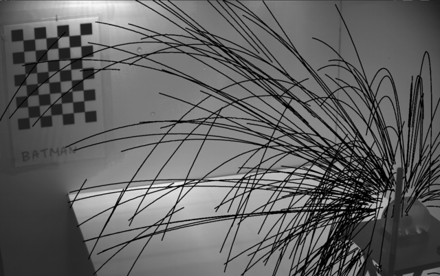

Extraction of Blood Droplet Flight Trajectories from Videos for Forensic Analysis
Luis A. Zarrabietia, Dhavide A. Aruliah and Faisal Z. Qureshi
|  |  |  |
Figure 1. Left: a pellet impacts ballistic gel containing transfer blood. Center: tracking individual blood droplets in high-speed video (1300 frames per second). Right: reconstructed blood droplet trajectories. Notice the effects of gravity and viscous drag forces even for short trajectories.
Publication
"Stereo reconstruction of droplet flight trajectories.,'' L.A. Zarrabeitia, F.Z. Qureshi, D.A. Aruliah, IEEE Transactions on Machine Intelligence and Pattern Analysis (PAMI), accepted to appear.
Abstract
We present a method for extracting three-dimensional flight trajectories of liquid droplets from video data. A high-speed stereo camera pair records videos of experimental reconstructions of projectile impacts and ensuing droplet scattering. After background removal and segmentation of individual droplets in each video frame, we introduce a model-based matching technique to accumulate image paths for individual droplets. Our motion detection algorithm is designed to deal gracefully with the lack of feature points, with the similarity of droplets in shape, size, and color, and with incomplete droplet paths due to noise, occlusions, etc. The final reconstruction algorithm pairs two-dimensional paths accumulated from each of the two cameras' videos to reconstruct trajectories in three dimensions. The reconstructed droplet trajectories constitute a starting point for a physically accurate model of blood droplet flight for forensic bloodstain pattern analysis.
Movies
Input
[porcine-blood-experiment.mp4]
Input videos captured from two high-speed stereo camera pair that are used to estimate the 3D trajectories of 100s of blood droplets.
Background removal
Upper left: a high speed capture of the impact. Upper right: dynamic background estimation. Lower left: foreground, computed as the absolute difference between the pixel intensities of the image and the corresponding background estimation. Lower right: thresholding.
Blob tracking
Upper left: a high speed capture of the impact. Upper right: foreground mask. Lower left: model based tracking of the droplets. Lower right: filtered paths overlayed on the original video.
3D reconstruction
 
Figure 2: 2d paths from the lateral and frontal cameras. These paths are used to reconstruct the 3D trajectories of the droplets.
F.Z. Qureshi
Last updated on
Thursday, December 13, 2012 8:20 PM